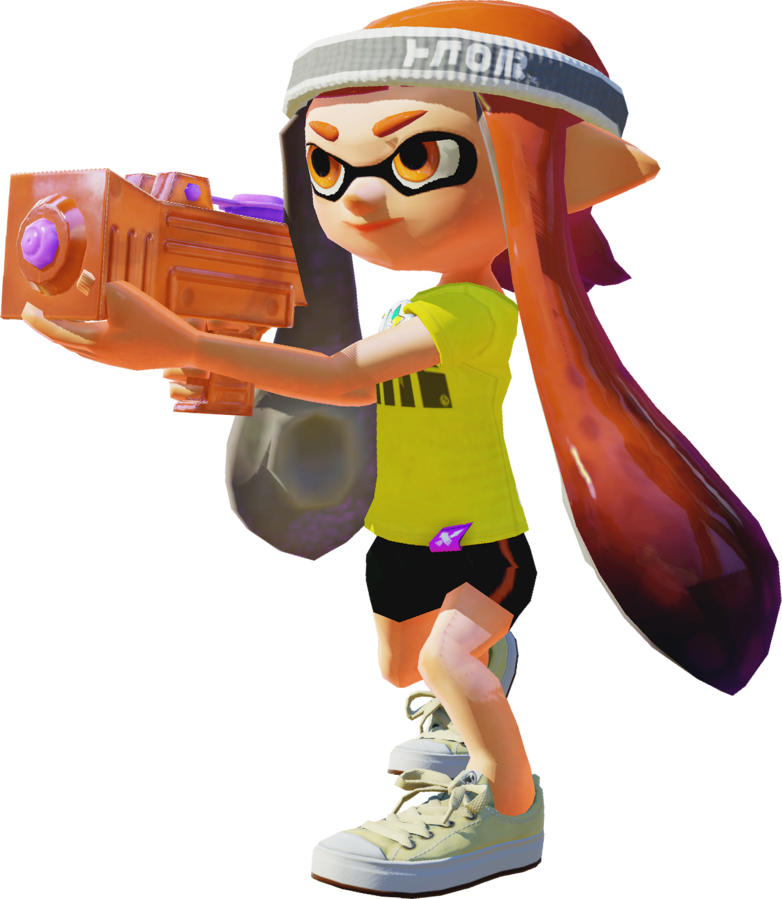
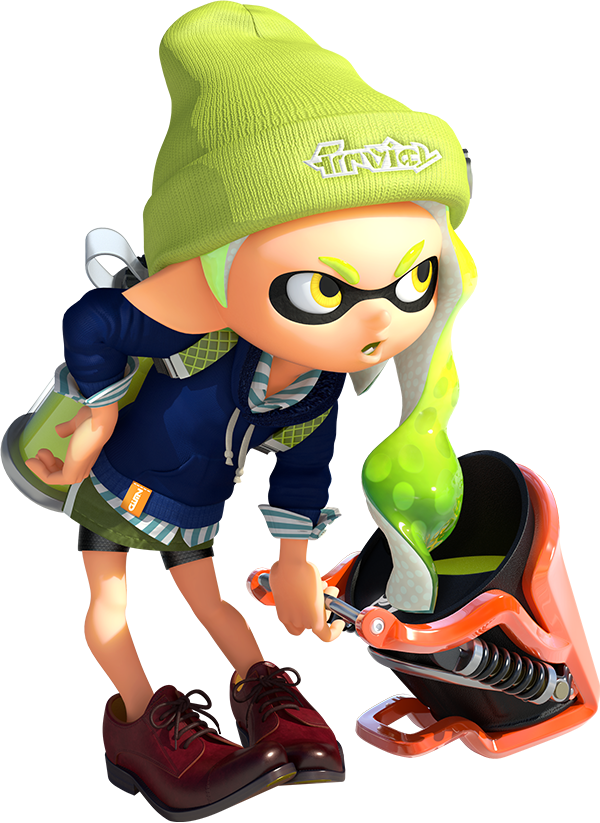
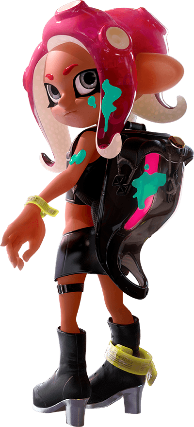
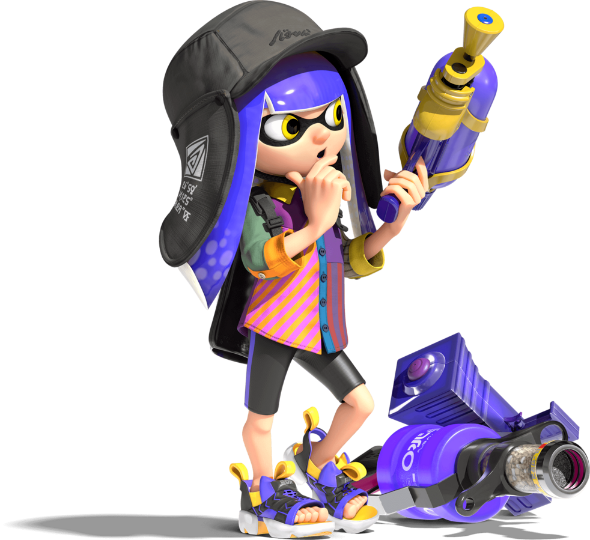
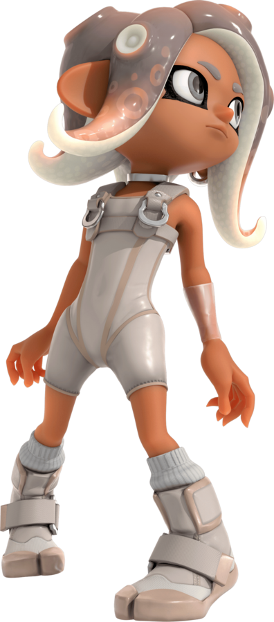
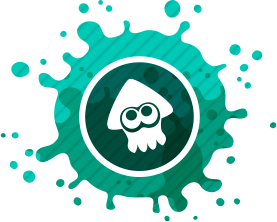

Splatoon (スプラトゥーン, Supuratūn) es un videojuego de género shooter en tercera persona desarrollado y publicado por Nintendo para Wii U en el año 2015. Es un acrónimo de Splat (una onomatopeya inglesa equivalente a un disparo) y Platoon (que en inglés significa pelotón, pandilla). Su jugabilidad se centra en la guerra entre inklings, utilizando tinta como arma para cubrir la mayoría del territorio. Al finalizar cada partida, un gato árbitro decide al ganador.

Splatoon 2 (スプラトゥーン2 Supuratūn 2) es la secuela del exitoso juego de Wii U, Splatoon. Fue filtrado a través del trailer preliminar de Nintendo Switch.
El desarrollo del juego no había sido nombrado por Nintendo, solo se pudo apreciar en un cameo de un comercial promocionando el lanzamiento de Nintendo Switch hasta el 13 de enero de 2017 que se confirmó su llegada para la consola en la presentación de la Switch en Tokio, Japón.
El juego fue lanzado el 21 de julio del 2017.

Splatoon 2: Octo Expansion añade un completo modo para un jugador que permite a los jugadores tomar el control del nuevo personaje Agente 8, un/a octoling que perdió sus recuerdos. La nueva campaña para un jugador incluye 80 misiones, así como nuevas historias que aportan datos desconocidos sobre personajes queridos de la saga. Los jugadores que completen la campaña Octo Expansion desbloquearán la habilidad de jugar como octolings en los combates multijugador.

Splatoon 3 es la tercera entrega de Splatoon y la secuela de Splatoon 2. Nintendo lo lanzó para Nintendo Switch el 9 septiembre 2022.
El resultado del Splatfest de 2019 de Splatoon 2 es probablemente la razón por la que el diseño del juego parece estar inspirado en el caos.

Side Order es un modo para un jugador en Splatoon 3. Es la segunda ola del contenido descargable pago Splatoon 3: Expansion Pass. Se reveló a través de un avance durante el Nintendo Direct de febrero de 2023 y se lanzó el 22 de febrero de 2024. El modo está diseñado para ser altamente rejuble.
La historia tiene lugar en "lo que ha sido del" Centro de Cromópolis, el centro principal de Splatoon 2, en "lo que habría pasado" si el Equipo Orden hubiera vencido al Equipo Caos.

